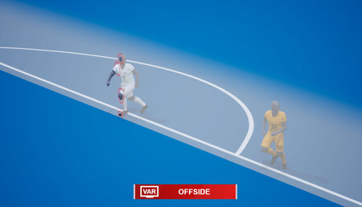
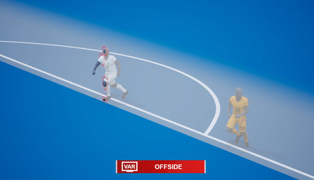

Impacto en el Deporte
Implementación del VAR en el Fútbol
La implementación del Video Assistant Referee (VAR) en el fútbol ha generado un gran impacto y controversia en el mundo deportivo. El VAR utiliza tecnología de video para revisar decisiones arbitrales, como goles, penales y tarjetas rojas, y corregir errores evidentes. Si bien el objetivo es mejorar la precisión, ha llevado a debates sobre la interrupción del flujo del juego y la interpretación de las jugadas.
 

Tabla de Puntos
| Equipos | Puntos Virtuales | Puntos Reales |
|---|---|---|
| Barcelona | 53 | 56 |
| Real Madrid | 42 | 48 |
| Atlético de Madrid | 39 | 38 |
| Real Sociedad | 37 | 42 |
Otras Tecnologías Controversiales
Además del VAR, otras tecnologías han generado controversia en diferentes deportes. Por ejemplo, en el tenis, la revisión electrónica de jugadas (Hawkeye) ha llevado a discusiones sobre la precisión de las decisiones. En el ciclismo, el uso de bicicletas eléctricas ha generado preocupaciones sobre el fraude deportivo. Estos ejemplos demuestran cómo la tecnología puede tener un impacto significativo en la integridad y la experiencia del deporte.